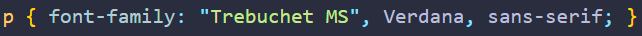
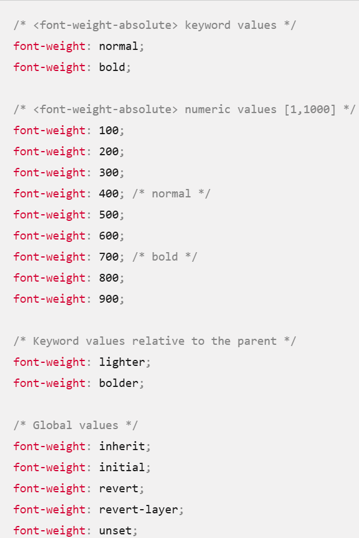
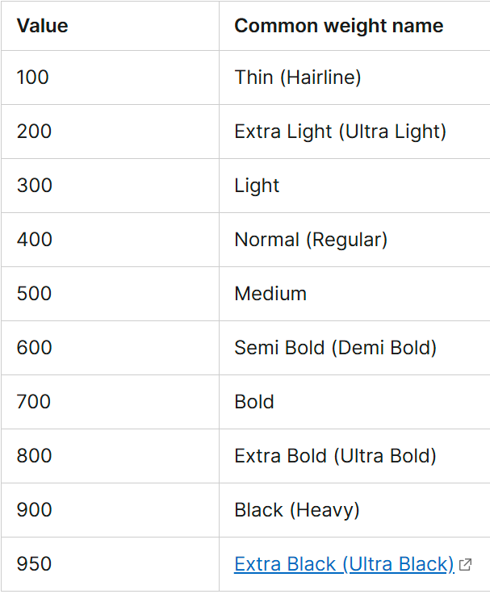
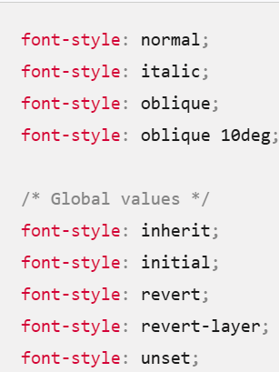
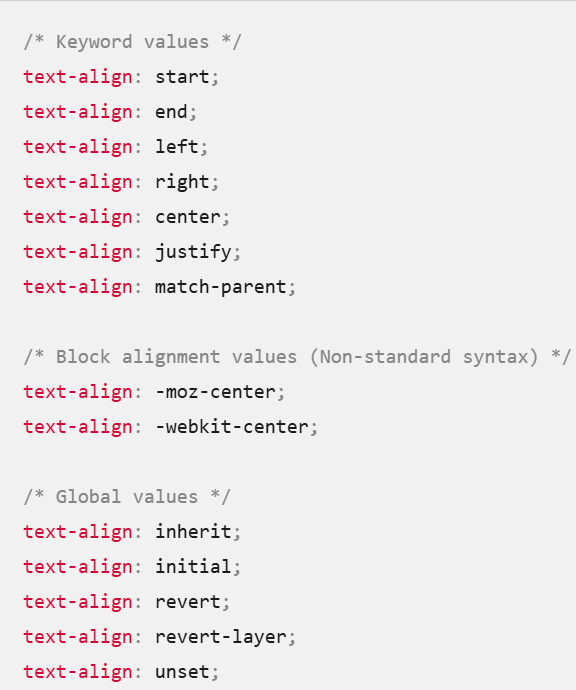
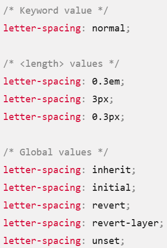
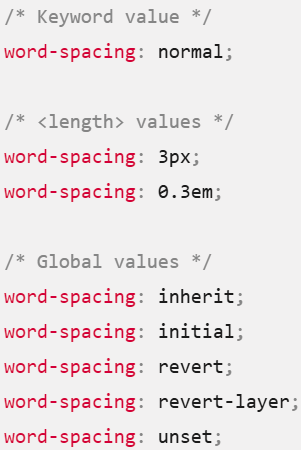
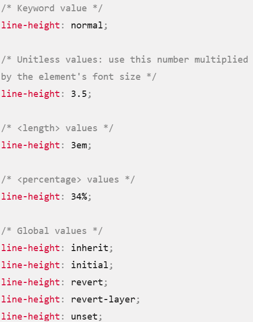
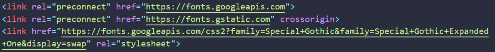

The font-family CSS property specifies a prioritized list of one or more font family names and/or generic family names for the selected element.
The browser starts at the beginning of the list and looks to see if that font is available on the machine. If it is, it applies that font to the selected elements. If not, it moves on to the next font, and so on.
It is a good idea to provide a suitable generic font name at the end of the stack so that if none of the listed fonts are available, the browser can at least provide something approximately suitable. To emphasize this point, paragraphs are given the browser's default serif font if no other option is available — which is usually Times New Roman — this is no good for a sans-serif font!
The font-size CSS property sets the size of the font. Changing the font size also updates the sizes of the font size-relative
The font-weight CSS property sets the weight (or boldness) of the font. The weights available depend on the font-family that is currently set.
The numerical values 100 to 900 roughly correspond to the following common weight names.
The font-style CSS property sets whether a font should be styled with a normal, italic, or oblique face from its font-family.
normal Selects a font that is classified as normal within a font-family.
italic Selects a font that is classified as italic. If no italic version of the face is available, one classified as oblique is used instead. If neither is available, the style is artificially simulated.
oblique Selects a font that is classified as oblique. If no oblique version of the face is available, one classified as italic is used instead. If neither is available, the style is artificially simulated.
oblique
The text-align CSS property sets the horizontal alignment of the inline-level content inside a block element or table-cell box.
The letter-spacing CSS property sets the horizontal spacing behavior between text characters. This value is added to the natural spacing between characters while rendering the text. Positive values of letter-spacing causes characters to spread farther apart, while negative values of letter-spacing bring characters closer together.
 The line-height CSS property sets the height of a line box in horizontal writing modes. In vertical writing modes, it sets the width of a line box. It's commonly used to set the distance between lines of text. On block-level elements in horizontal writing modes, it specifies the preferred height of line boxes within the element, and on non-replaced inline elements, it specifies the height that is used to calculate line box height.
normal - Depends on the user agent. Desktop browsers (including Firefox) use a default value of roughly 1.2, depending on the element's font-family.
number - (unitless) The used value is this unitless number multiplied by the element's own font size. The computed value is the same as the specified number. In most cases, this is the preferred way to set line-height and avoid unexpected results due to inheritance.
length - The specified length is used in the calculation of the line box height. Values given in em units may produce unexpected results (see example below).
percentage - Relative to the font size of the element itself. The computed value is this percentage multiplied by the element's computed font size. Percentage values may produce unexpected results.
Take me to Google Fonts
Which will look something like this:
